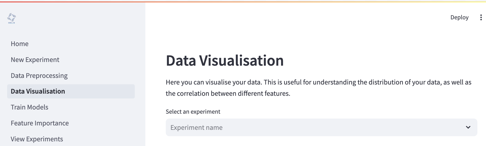
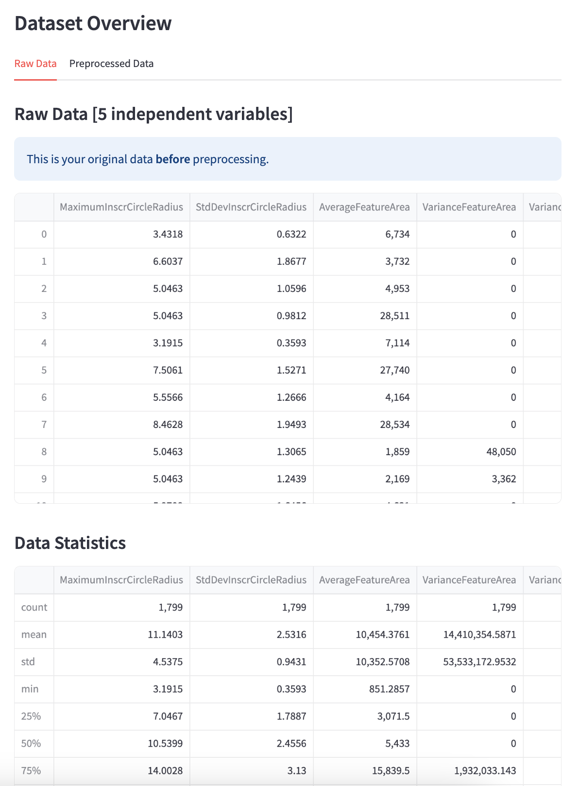
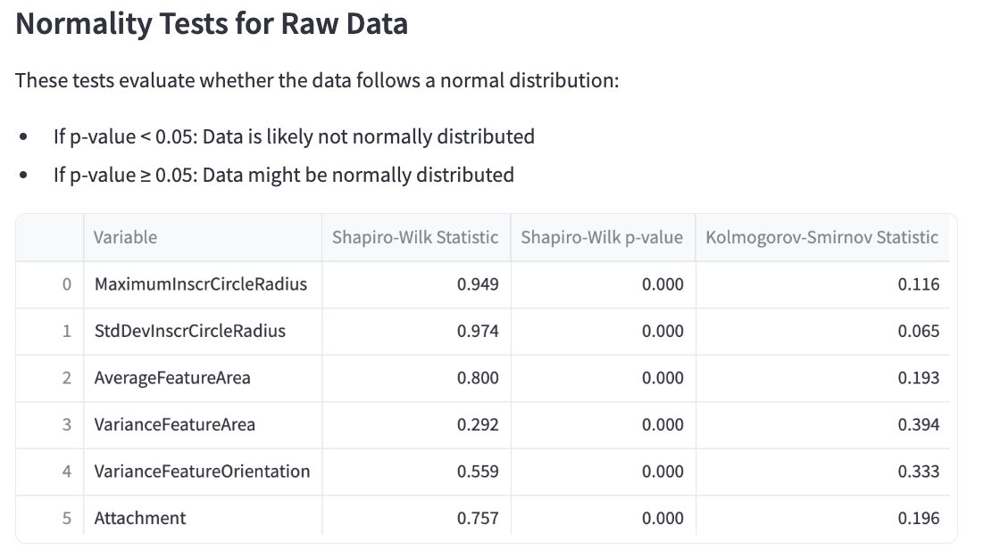
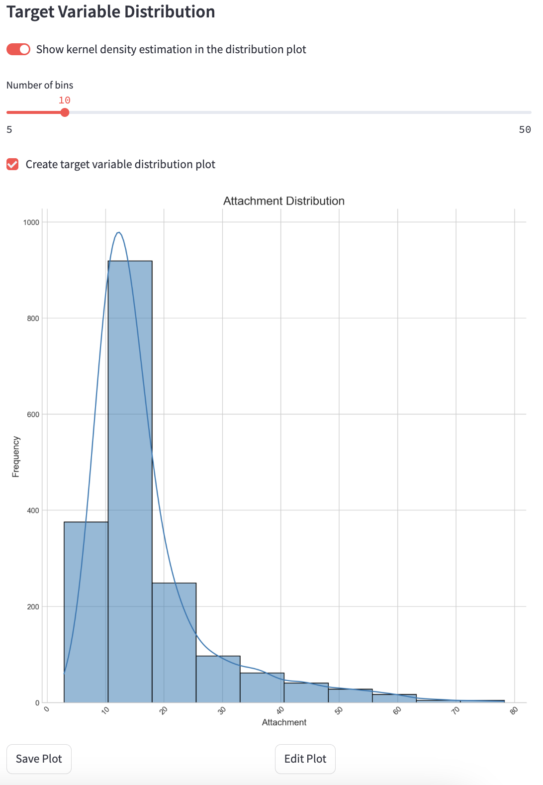
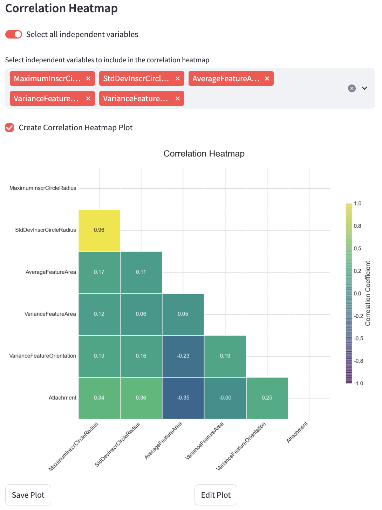
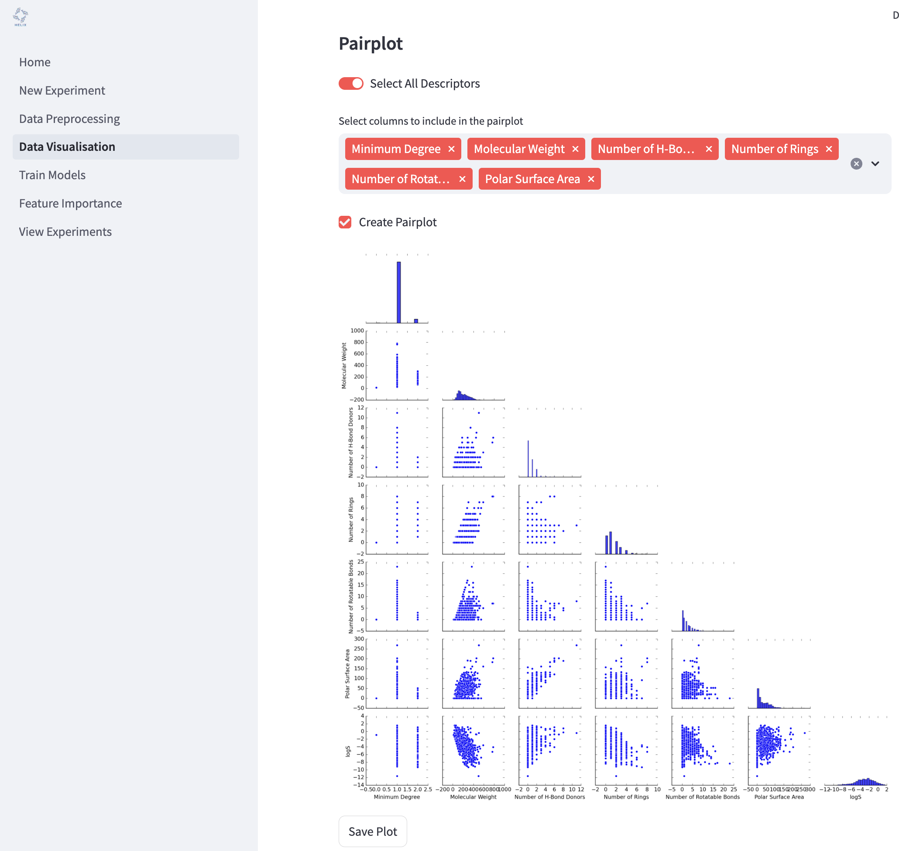
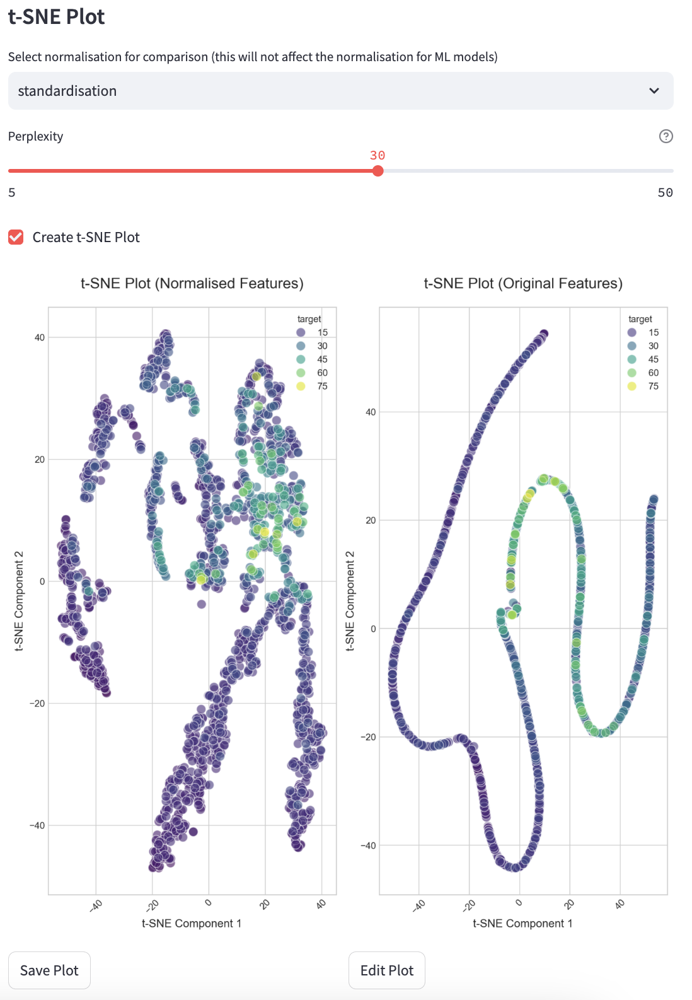

Data Visualisation¶
The Data Visualisation page allows you to explore and analyse your data using a variety of visual tools. This helps in understanding data distributions, correlations, and feature interactions.

To begin, select your experiment from the dropdown menu where it says “Select an experiment”. This will load the dataset associated with your selected experiment.
Dataset Overview¶
The dataset overview gives you a snapshot of how your data look. This is split into two tabs: one showing the Raw Data data (i.e. how it looked before preprocessing) and one showing the Preprocessed Data (i.e. how the data are after preprocessing). The overview also includes a normality test for each variable in the dataset (independent and dependent). Normality is determined by two statistical tests: the Shapiro-Wilk and the Kolmogorov-Smirnov test. If the p-value < 0.05, the data is likely not normally distributed. If the p-value ≥ 0.05, the data might be normally distributed.
 
Target Variable Distribution¶
Visualise the distribution of your target variable using histograms and KDE (Kernel Density Estimation).
Show KDE: Toggle to include a KDE curve.
Number of Bins: Adjust the number of bins in the histogram.

Correlation Heatmap¶
Display a heatmap showing correlations between selected features.
Select All Descriptors: Include all features in the heatmap.
Select Columns: Manually select specific features for the heatmap.

Pairplot¶
Generate pairwise scatter plots for selected features to identify trends and interactions.
Select All Descriptors: Include all features in the pairplot.
Select Columns: Manually select specific features for pairplot generation.

t-SNE Plot¶
Visualise high-dimensional data in two dimensions using t-SNE.

Saving Visualisations¶
You can save generated plots to disk for reporting or further analysis. To save a plot, click the “Save Plot” button beneath each plot. You can also edit each plot individually by clicking the “Edit Plot” button beneath each plot and changing the settings in the panel.
How to Start¶
Select an experiment.
Choose the visualisation type.
Adjust parameters as needed.
Click the buttons to generate and save visualisations.
Press “Create and Save” to save plots for further use.